机器学习预测沪深300股票涨跌
近几年人工智能大热，其使用的算法包括机器学习尤其是深度学习，这俩者是目前最火热的职业之一。在人们生活中，机器学习和深度学习也在逐渐走如人们的生活，比如Alphago、人脸识别、无人驾驶都用到了机器学习或深度学习的一些算法，让人切实感受到科技的力量正显著地改变着人类世界。而运用机器学习进行量化交易，也是机器学习的一大应用领域。本文采用python第三方库sklearn提供的几种分类算法对沪深300的部分股票进行训练和学习，以期能够预测股票的涨跌情况。
数据采集
使用tushare提供的API采集2012-2017年沪深300的股票交易数据，沪市、深市、创业板等股指数据，股票的基本面数据以及其他的经济指标数据，由于数据量不大，直接保存为CSV格式的文件。
数据分析
数据处理及清洗
import pandas as pd
import numpy as np
import matplotlib.pyplot as plt
import seaborn as sns
sns.set(style="whitegrid", palette="muted", font_scale=1, color_codes=True, context="talk")
%matplotlib inline
from matplotlib.font_manager import FontProperties
font = FontProperties(fname=r"/usr/share/fonts/truetype/arphic/ukai.ttc")
# font = FontProperties(fname=r"C:\Windows\Fonts\msyh.ttc")
import datetime
import re
from techFeature import StockFeature
import os
import sys
reload(sys)
sys.setdefaultencoding('utf-8')
from sklearn.preprocessing import StandardScaler
from sklearn.preprocessing import MinMaxScaler
from sklearn.model_selection import train_test_split
from sklearn.model_selection import cross_val_score
from sklearn.model_selection import learning_curve
from sklearn.model_selection import GridSearchCV
from sklearn.feature_selection import RFE
from sklearn.linear_model import RandomizedLasso
from sklearn.linear_model import Ridge
from sklearn.linear_model import Lasso
from sklearn.linear_model import LinearRegression
from sklearn.linear_model import RandomizedLogisticRegression
from sklearn.linear_model import LogisticRegression
from sklearn.ensemble import RandomForestClassifier
from sklearn.ensemble import ExtraTreesClassifier
from sklearn.ensemble import AdaBoostClassifier
from sklearn.ensemble import BaggingClassifier
from sklearn.metrics import accuracy_score
from sklearn.metrics import f1_score
from sklearn.metrics import recall_score
from sklearn.metrics import precision_score
from sklearn.metrics import classification_report
from sklearn.metrics import confusion_matrix
from sklearn.metrics import mean_squared_error
from sklearn.metrics import r2_score
from sklearn.pipeline import Pipeline
from sklearn.tree import DecisionTreeClassifier
from sklearn.ensemble import VotingClassifier
from sklearn import svm
沪深300股票中有近50支股票缺失数据较多(超过20%），故使用处理后的251支股票进行初步统计分析
# 读取已经删除过部分股票的数据
st = pd.read_csv("./datas/hs300_dropleft_251.csv", encoding="utf-8", dtype={"code": str})
st["date"] = pd.to_datetime(st["date"])
#由于600688和600871的pct_change有异常，故不使用该两支股票的信息
st = st[st["code"] != "600688"]
st = st[st["code"] != "600871"]
st.head(2)
| date | code | close | high | low | open | volume | |
|---|---|---|---|---|---|---|---|
| 0 | 2012-01-04 | 000001 | 5.120 | 5.265 | 5.116 | 5.265 | 147910.0 |
| 1 | 2012-01-04 | 000002 | 6.052 | 6.316 | 6.044 | 6.168 | 474329.0 |
st.shape
(335285, 7)
st_pv = st.pivot_table(index="date", columns="code")
st_pv.head(3)
| close | ... | volume | |||||||||||||||||||
|---|---|---|---|---|---|---|---|---|---|---|---|---|---|---|---|---|---|---|---|---|---|
| code | 000001 | 000002 | 000008 | 000009 | 000060 | 000063 | 000069 | 000100 | 000156 | 000157 | ... | 601901 | 601919 | 601933 | 601939 | 601958 | 601988 | 601989 | 601992 | 601998 | 603993 |
| date | |||||||||||||||||||||
| 2012-01-04 | 5.120 | 6.052 | 0.760 | 5.344 | 7.802 | 13.371 | 5.013 | 1.607 | NaN | 6.362 | ... | 606942.0 | 258238.0 | 11334.0 | 414369.0 | 52481.0 | 183288.0 | 222003.0 | 63765.0 | 160450.0 | NaN |
| 2012-01-05 | 5.197 | 5.986 | 0.729 | 5.048 | 7.675 | 13.292 | 4.782 | 1.652 | NaN | 6.151 | ... | 533317.0 | 320893.0 | 15274.0 | 804582.0 | 48201.0 | 389570.0 | 276832.0 | 58840.0 | 863501.0 | NaN |
| 2012-01-06 | 5.184 | 5.912 | 0.734 | 5.350 | 7.763 | 12.950 | 4.790 | 1.661 | NaN | 6.143 | ... | 867634.0 | 304644.0 | 14070.0 | 662240.0 | 43909.0 | NaN | 215748.0 | 62473.0 | 383847.0 | NaN |
3 rows × 1245 columns
st_pv_ = st_pv.copy()
st_pv_.columns = st_pv.columns.reorder_levels([1,0])
st_pv_.head(3)
| code | 000001 | 000002 | 000008 | 000009 | 000060 | 000063 | 000069 | 000100 | 000156 | 000157 | ... | 601901 | 601919 | 601933 | 601939 | 601958 | 601988 | 601989 | 601992 | 601998 | 603993 |
|---|---|---|---|---|---|---|---|---|---|---|---|---|---|---|---|---|---|---|---|---|---|
| close | close | close | close | close | close | close | close | close | close | ... | volume | volume | volume | volume | volume | volume | volume | volume | volume | volume | |
| date | |||||||||||||||||||||
| 2012-01-04 | 5.120 | 6.052 | 0.760 | 5.344 | 7.802 | 13.371 | 5.013 | 1.607 | NaN | 6.362 | ... | 606942.0 | 258238.0 | 11334.0 | 414369.0 | 52481.0 | 183288.0 | 222003.0 | 63765.0 | 160450.0 | NaN |
| 2012-01-05 | 5.197 | 5.986 | 0.729 | 5.048 | 7.675 | 13.292 | 4.782 | 1.652 | NaN | 6.151 | ... | 533317.0 | 320893.0 | 15274.0 | 804582.0 | 48201.0 | 389570.0 | 276832.0 | 58840.0 | 863501.0 | NaN |
| 2012-01-06 | 5.184 | 5.912 | 0.734 | 5.350 | 7.763 | 12.950 | 4.790 | 1.661 | NaN | 6.143 | ... | 867634.0 | 304644.0 | 14070.0 | 662240.0 | 43909.0 | NaN | 215748.0 | 62473.0 | 383847.0 | NaN |
3 rows × 1245 columns
通过计算pct_change检查数据有无异常情况
pctchanges = st_pv["close"].pct_change() * 100.0
pctchanges.dropna(how="all", inplace=True)
pp = pctchanges.apply(lambda x: np.abs(x) > 11.0)
ppsum = pp.sum().sort_values(ascending=False)
problem_stock_index = ppsum[ppsum > 0].index.tolist() # [u'600153', u'600871', u'600688']
problem_stock = st_pv_[problem_stock_index]
problem_stock.head(3)
| code | 600153 | ||||
|---|---|---|---|---|---|
| close | high | low | open | volume | |
| date | |||||
| 2012-01-04 | 5.177 | 5.396 | 5.161 | 5.380 | 82566.0 |
| 2012-01-05 | 5.161 | 5.203 | 5.144 | 5.161 | 86409.0 |
| 2012-01-06 | 5.152 | 5.186 | 5.085 | 5.177 | 69581.0 |
problem_stock.tail(3)
| code | 600153 | ||||
|---|---|---|---|---|---|
| close | high | low | open | volume | |
| date | |||||
| 2017-10-19 | 11.89 | 11.92 | 11.73 | 11.80 | 170555.0 |
| 2017-10-20 | 12.00 | 12.08 | 11.92 | 11.95 | 201325.0 |
| 2017-10-23 | 12.00 | 12.09 | 11.89 | 12.04 | 140262.0 |
pctchanges[problem_stock_index].plot(figsize=(8,6), legend=True)
<matplotlib.axes._subplots.AxesSubplot at 0x7ff7d4cf5750>
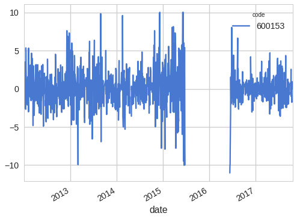
# 各统计量的均值、中位数、百分位数、最大和最小值一览
hs_all_info = st_pv.describe()
hs_all_info
| close | ... | volume | |||||||||||||||||||
|---|---|---|---|---|---|---|---|---|---|---|---|---|---|---|---|---|---|---|---|---|---|
| code | 000001 | 000002 | 000008 | 000009 | 000060 | 000063 | 000069 | 000100 | 000156 | 000157 | ... | 601901 | 601919 | 601933 | 601939 | 601958 | 601988 | 601989 | 601992 | 601998 | 603993 |
| count | 1397.000000 | 1258.000000 | 1195.000000 | 1311.000000 | 1396.000000 | 1367.000000 | 1364.000000 | 1214.000000 | 1173.000000 | 1401.000000 | ... | 1.291000e+03 | 1.261000e+03 | 1.394000e+03 | 1.407000e+03 | 1.408000e+03 | 1.407000e+03 | 1.206000e+03 | 1.381000e+03 | 1.405000e+03 | 1.204000e+03 |
| mean | 7.895441 | 12.305227 | 5.456906 | 8.294201 | 9.930986 | 14.259742 | 6.607823 | 3.015196 | 23.784151 | 5.537340 | ... | 1.095797e+06 | 5.011430e+05 | 3.265446e+05 | 9.733053e+05 | 1.990064e+05 | 2.778726e+06 | 2.198017e+06 | 4.599039e+05 | 6.741906e+05 | 6.512692e+05 |
| std | 2.113651 | 6.182167 | 3.846793 | 2.731044 | 3.188618 | 4.655476 | 1.644207 | 1.156071 | 9.296279 | 1.504979 | ... | 9.993168e+05 | 7.407939e+05 | 3.802748e+05 | 1.459887e+06 | 2.193792e+05 | 5.595141e+06 | 2.890371e+06 | 9.062799e+05 | 8.444628e+05 | 9.123304e+05 |
| min | 4.269000 | 5.592000 | 0.729000 | 3.958000 | 5.344000 | 6.190000 | 4.144000 | 1.607000 | 7.685000 | 3.751000 | ... | 7.093400e+04 | 2.760100e+04 | 3.177000e+03 | 8.230200e+04 | 1.672500e+04 | 5.679500e+04 | 2.705100e+04 | 2.710800e+04 | 4.250900e+04 | 1.422600e+04 |
| 25% | 6.190000 | 7.439000 | 1.720500 | 6.004000 | 7.720000 | 10.852500 | 5.373000 | 2.112000 | 17.268000 | 4.397000 | ... | 4.283485e+05 | 1.087420e+05 | 5.740900e+04 | 2.672415e+05 | 6.349275e+04 | 2.768075e+05 | 4.695140e+05 | 1.243880e+05 | 2.062040e+05 | 1.110132e+05 |
| 50% | 8.016000 | 9.398000 | 5.283000 | 8.351000 | 9.682500 | 13.660000 | 6.317000 | 2.589000 | 20.969000 | 4.780000 | ... | 7.909860e+05 | 2.291660e+05 | 2.132770e+05 | 5.010900e+05 | 1.210935e+05 | 7.675750e+05 | 1.006596e+06 | 2.145180e+05 | 3.466360e+05 | 2.936680e+05 |
| 75% | 9.224000 | 16.605750 | 9.001000 | 10.037500 | 11.390250 | 16.361000 | 7.371000 | 3.624000 | 28.892000 | 6.896000 | ... | 1.394280e+06 | 5.246280e+05 | 4.610060e+05 | 9.291410e+05 | 2.398298e+05 | 1.930524e+06 | 2.492684e+06 | 4.556470e+05 | 7.663030e+05 | 7.521080e+05 |
| max | 13.986000 | 29.300000 | 13.721000 | 17.548000 | 28.849000 | 30.630000 | 13.448000 | 7.147000 | 59.297000 | 9.635000 | ... | 7.081835e+06 | 6.846566e+06 | 3.915401e+06 | 1.805440e+07 | 2.213357e+06 | 5.109897e+07 | 2.107839e+07 | 1.693063e+07 | 7.545412e+06 | 6.340851e+06 |
8 rows × 1245 columns
stock_null = (hs_all_info.loc["count", "close"] / st_pv.shape[0]) * 100
stock_null = stock_null.map(lambda x: np.int(x))
stock_null = stock_null.value_counts().sort_index()
plt.figure(figsize=(8,6))
stock_null.plot(kind="bar", grid=False)
plt.ylabel(u"样本数量", fontsize=16, fontproperties=font)
plt.xlabel(u"非缺失数据百分比 %", fontsize=16, fontproperties=font)
plt.title(u"数据集数据非缺失情况", fontproperties=font, fontsize=20)
plt.gca().yaxis.grid(True, linestyle = "-.",)
plt.gca().xaxis.grid(False)
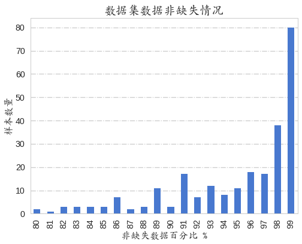
由于采集数据是12-17年的，时间跨度有些大，故基本所有的股票都有缺失的数据，这是因为股市经常出现由于各种原因停止交易的股票，在此选择缺失数据在20%以内的股票为初步研究对象。
沪深300各股票的价格区间分布
group_name = [u'便宜', u'适中', u'稍贵', u'贵']
bins = [2, 10, 30, 100, 300]
stock_kind_tuple = pd.cut(hs_all_info["close"].loc["mean", :], bins,
labels=group_name, retbins=True)
st_kind = pd.DataFrame(stock_kind_tuple[0].value_counts())
st_kind["index_name"] = [u"便宜(2-10]", u"适中(10-30]", u"稍贵(30-100]", u"贵(100-300]"]
plt.figure(figsize=(8,6))
g = sns.barplot(x="index_name", y="mean", data=st_kind)
plt.xticks(g.get_xticks(), fontproperties=font, fontsize=16)
plt.ylabel(u"数量", fontsize=16, fontproperties=font)
plt.xlabel(u"股票价格区间 ￥", fontsize=16, fontproperties=font)
plt.title(u"沪深300股票(251支)价格区间", fontproperties=font, fontsize=20)
plt.gca().yaxis.grid(True, linestyle = "-.",)
plt.legend(loc=7,prop=font, fontsize=12)
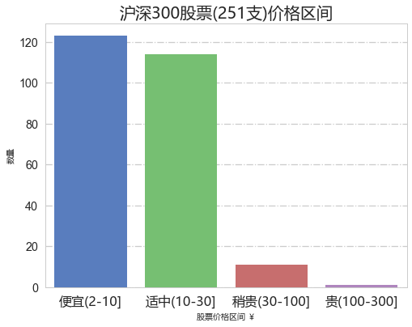
从图中明显看出沪深300股票中绝大部分股票的价格(均价)在30元以内，后续研究选择价格在10-30元的股票为研究对象，共计114支。
沪深300股票2012-2017收市价格的波动情况统计
stock_std = hs_all_info.loc["std", "close"].sort_values(ascending=False)
stock_std = stock_std.map(lambda x: np.round(x, 2))
plt.figure(figsize=(8,6))
fig = sns.distplot(stock_std, bins=80, kde=True, vertical=False, color="green")
sns.despine(top=True)
plt.yticks(fig.get_yticks(), fig.get_yticks() * 100)
plt.ylabel('Distribution [%]', fontsize=16)
# plt.xticks(range(0, 100, 10))
plt.gca().yaxis.grid(True, linestyle = "-.")
plt.gca().xaxis.grid(True, linestyle = "-.")
plt.xlabel(u"沪深300各股票收市价格std", fontsize=16, fontproperties=font)
plt.title(u"沪深300各股票收市价格波动", fontsize=20, fontproperties=font)
Text(0.5,1,'沪深300各股票收市价格波动')
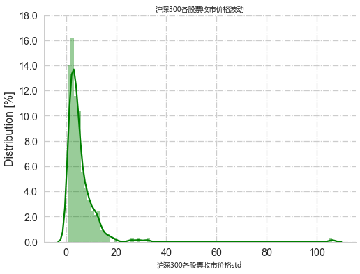
将251支股票的收市价格的标注差进行汇总统计，结果如下，大部分股票的收市价格波动均较小，少数股票有较大的波动，如，贵州茅台的std达到106，从2012-01-04的134.60涨到了 2017-10-23的573.41。可以拿股价std较大的股票做文章。
bins = [0, 5, 10, 20, 100, 200]
stock_std_cut = pd.cut(stock_std, bins, labels=False)
stock_std_stat = stock_std.groupby(stock_std_cut).agg([np.min, np.max, np.mean, np.median, np.std, np.size])
stock_std_stat["stock_std_cut_range"] = ["(0, 5]", "(5, 10]", "(10, 20]", "(20, 100]", "(100, 200]"]
stock_std_stat.set_index("stock_std_cut_range", inplace=True)
stock_std_stat
| amin | amax | mean | median | std | size | |
|---|---|---|---|---|---|---|
| stock_std_cut_range | ||||||
| (0, 5] | 0.58 | 5.00 | 2.756818 | 2.710 | 1.217010 | 154.0 |
| (5, 10] | 5.04 | 9.67 | 6.982667 | 6.865 | 1.377019 | 60.0 |
| (10, 20] | 10.29 | 19.54 | 12.872258 | 12.490 | 2.421688 | 31.0 |
| (20, 100] | 25.95 | 32.31 | 29.096667 | 29.030 | 3.180524 | 3.0 |
| (100, 200] | 106.09 | 106.09 | 106.090000 | 106.090 | NaN | 1.0 |
def stock_indicator_plot(stock_data, stock_index):
particular = stock_data[stock_index]
if "600519" in stock_index:
maotai = stock_data["600519"]
if "600519" in particular.columns:
particular.drop("600519", axis=1, inplace=True)
particular.columns = particular.columns.reorder_levels([1,0])
fig, ax = plt.subplots(figsize=(16,12))
particular["close"].plot(ax=ax, legend=False if len(stock_index)>30 else True, alpha=0.7)
if "600519" in stock_index:
maotai["close"].plot(secondary_y=True, ax=ax, linewidth=4, legend=True, label=u"maotai")
ax.set_ylabel(u"close price ￥", fontsize=15, fontproperties=font)
ax.set_xlabel("")
plt.gca().yaxis.grid(True, linestyle = "-.")
plt.title(u"沪深300的股票价格趋势", fontproperties=font, fontsize=20)
def stock_pctchange_plot(stock_data, stock_index):
if "600688" in stock_index:
stock_index.remove("600688")
if "600871" in stock_index:
stock_index.remove("600871")
particular = stock_data[stock_index]
particular.columns = particular.columns.reorder_levels([1,0])
pctchange = particular["close"].pct_change() * 100.0
fig, ax = plt.subplots(figsize=(16,12))
pctchange.plot(ax=ax, legend=False if len(stock_index)>30 else True, alpha=0.7)
plt.ylabel('pct_change [%]', fontsize=16)
plt.xlabel('')
plt.title(u"沪深300股票涨跌幅(%)", fontsize=20, fontproperties=font)
std > 20的股票
large_index = stock_std_cut[stock_std_cut > 2].index.tolist()
stock_indicator_plot(st_pv_, large_index)
stock_pctchange_plot(st_pv_, large_index)
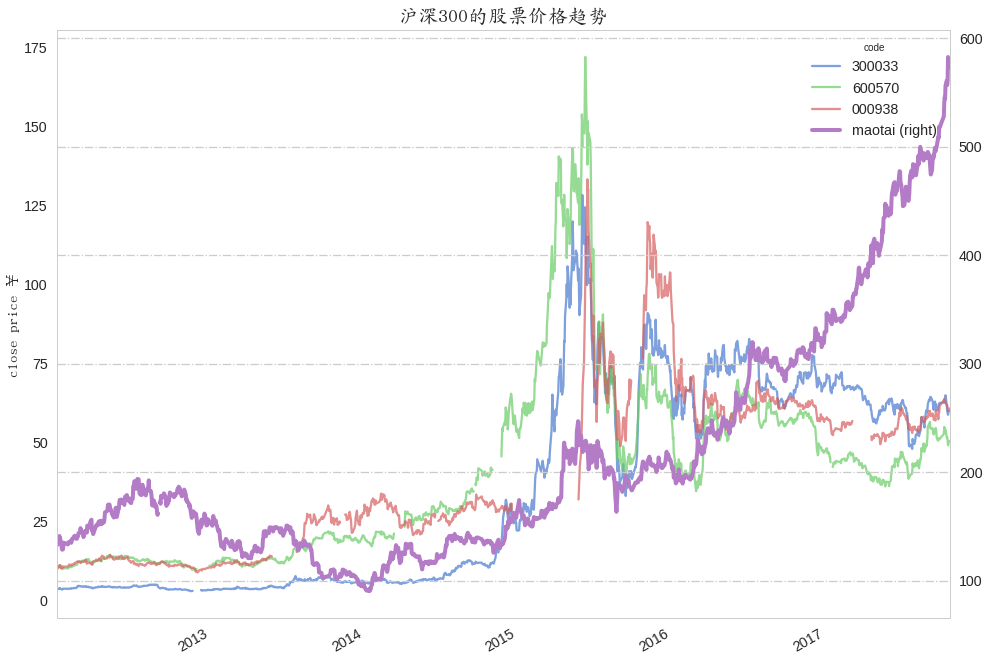
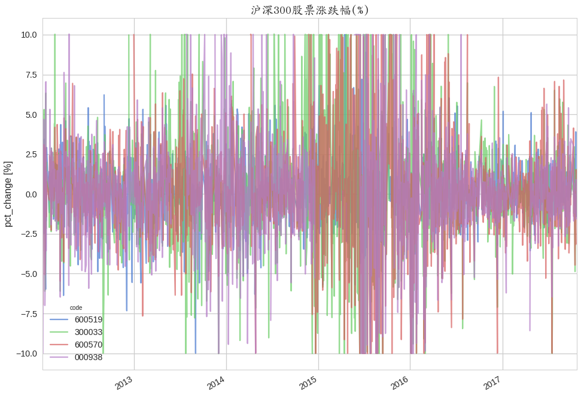
10 < std < 20 的股票
middle_index = stock_std_cut[stock_std_cut == 2].index.tolist()
stock_indicator_plot(st_pv_, middle_index)
stock_pctchange_plot(st_pv_, middle_index)
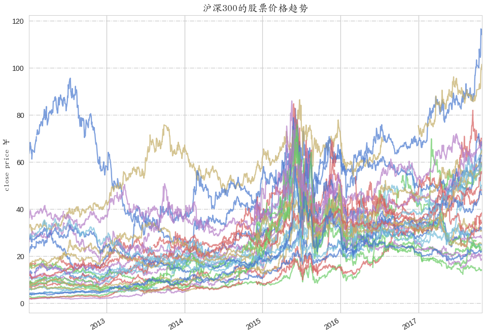
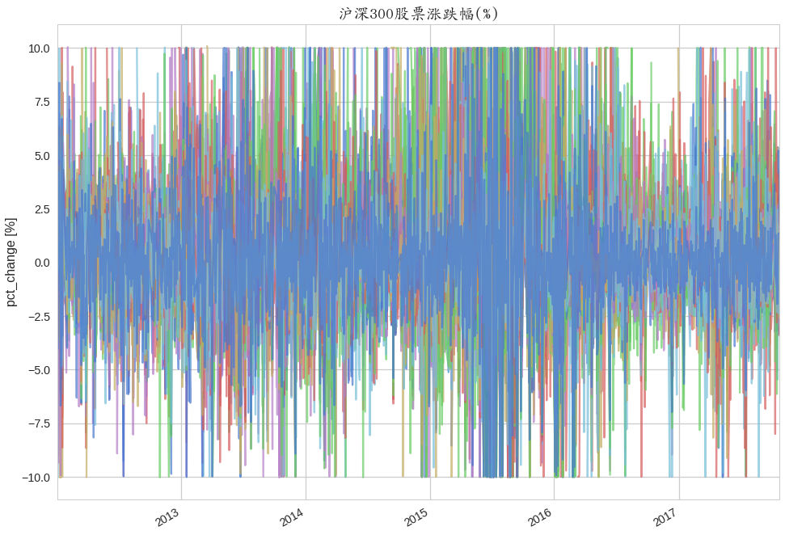
5 < std < 10 的股票
minor_index = stock_std_cut[stock_std_cut == 1].index.tolist()
stock_indicator_plot(st_pv_, minor_index)
stock_pctchange_plot(st_pv_, minor_index)
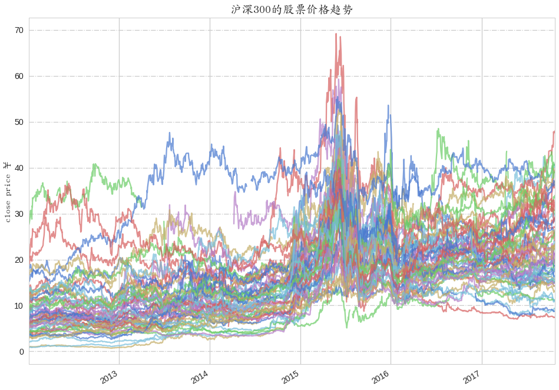
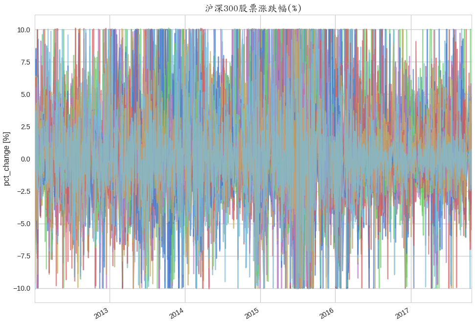
0 < std < 5 的股票
poor_index = stock_std_cut[stock_std_cut == 0].index.tolist()
stock_indicator_plot(st_pv_, poor_index)
stock_pctchange_plot(st_pv_, poor_index)
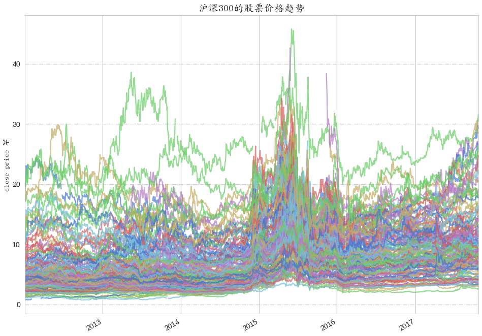
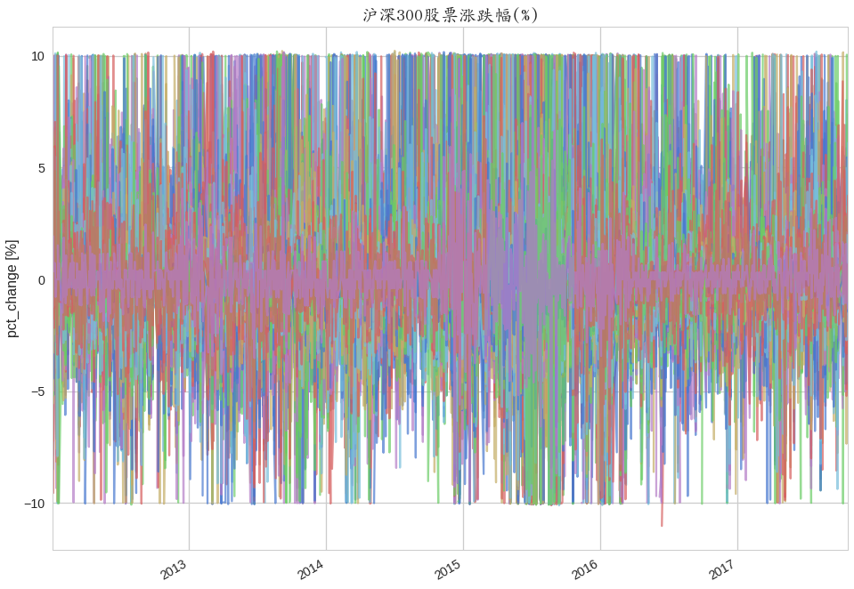
分类模型建立
首先，选择股票价格(均价）在10-30元之间的股票为最终研究对象，共114支股票，以当日收市股票涨跌幅(pct_change)大于0的为涨，小于0的为跌为评判标准，根据前1日、5日、30日、90日的股票信息为依据预测今日股票的涨跌情况。
其次，选择股票收市价格、成交量、日最高和最低价格和其他的tech_features如5日均值等其他根据股票价格成交量信息计算出的指标，并且添加了股票的基本面数据、中国股市的股指数据、一些经济数据等信息构成特征集合。然后使用递归特征消除法等特征选取方法进行特征抽取，选择出用于构建分类模型的特征集。
随之是构建分类模型，采用sklearn提供的随机森林、LogisticRegression、决策树、Adaboost分类算法分别构建对应的分类器，然后采用softVoting进行模型融合得到最终的分类器。
根据第一次构建的分类模型，对那些准确率不高于50%的股票用特定的特征重新建模进行评估。
股票特征数据处理
# 选择股票价格(12-17年均值）在10-30元之间的股票
stocks_ = st_pv.copy()
stocks_.columns = st_pv.columns.reorder_levels([1,0])
st_mean_price = st_pv["close"].mean()
stt = st_mean_price[st_mean_price > 10.0]
large = set(stt.index)
small = set(stt[stt < 30.0].index)
stockid_list = list(large & small)
# len(stockid) # 114
stocks= stocks_[stockid_list]
stocks.shape # (1409, 570)
stocks.head(2)
| code | 000002 | 600066 | ... | 000826 | 000728 | ||||||||||||||||
|---|---|---|---|---|---|---|---|---|---|---|---|---|---|---|---|---|---|---|---|---|---|
| close | high | low | open | volume | close | high | low | open | volume | ... | close | high | low | open | volume | close | high | low | open | volume | |
| date | |||||||||||||||||||||
| 2012-01-04 | 6.052 | 6.316 | 6.044 | 6.168 | 474329.0 | 6.282 | 6.501 | 6.179 | 6.487 | 39311.0 | ... | 13.505 | 14.387 | 13.505 | 14.269 | 27417.0 | 5.249 | 5.354 | 5.249 | 5.354 | 51205.0 |
| 2012-01-05 | 5.986 | 6.126 | 5.937 | 6.036 | 528117.0 | 6.228 | 6.406 | 6.193 | 6.217 | 54086.0 | ... | 12.622 | 13.634 | 12.510 | 13.375 | 65717.0 | 5.174 | 5.305 | 5.155 | 5.230 | 61228.0 |
2 rows × 570 columns
处理宏观经济数据
def stock_economy_tackle():
stock_en_list = []
# 通过pandas将csv文件内容append到列表里然后生成字典便于后续数据处理
for stcok_en in os.listdir("./datas/stock_economy/"):
st_en_path = os.path.join("./datas/stock_economy", stcok_en)
stock_en_list.append(pd.read_csv(st_en_path, encoding="utf-8"))
stock_en_dict = dict(zip([i[:-9] for i in os.listdir("./datas/stock_economy/")], stock_en_list))
# 不同文件内容分别处理
for stock_en in [i[:-9] for i in os.listdir("./datas/stock_economy/")]:
if stock_en == "shibor":
stock_en_dict[stock_en].set_index(pd.to_datetime(stock_en_dict[stock_en]["date"]), inplace=True)
shibor = stock_en_dict[stock_en].drop(["6M", "9M", "1Y", "date"], axis=1)
shibor.columns = shibor.columns.map(lambda x: "shibor_" + x)
elif stock_en == "money":
stock_en_dict[stock_en].sort_index(ascending=False, inplace=True)
num = len(stock_en_dict[stock_en].columns) - 1
stock_en_dict[stock_en] = stock_en_dict[stock_en].append(pd.Series(["2017.11"]+[np.nan]*num, index=stock_en_dict[stock_en].columns.values), ignore_index=True)
stock_en_dict[stock_en]["month"] = stock_en_dict[stock_en]["month"].astype(str)
stock_en_dict[stock_en]["month"] = stock_en_dict[stock_en]["month"].str.replace(r"\.", "-")
stock_en_dict[stock_en].set_index(pd.to_datetime(stock_en_dict[stock_en]["month"]), inplace=True)
stock_en_dict[stock_en].drop("month", axis=1, inplace=True)
cols = stock_en_dict[stock_en].columns.map(lambda x: x if len(x) < 6 else "").values
cols = [i for i in cols if len(i) > 1]
money = stock_en_dict[stock_en][cols]
money = money["2013-01-01":]
money = money.astype(np.float)
# 从月份数据升采样到天
money = money .resample("1D").mean()
money.fillna(method="ffill", inplace=True)
money.columns = money.columns.map(lambda x: "money_" + x)
elif stock_en == "lpr":
stock_en_dict[stock_en]["date"] = pd.to_datetime(stock_en_dict[stock_en]["date"])
stock_en_dict[stock_en].set_index(stock_en_dict[stock_en]["date"], inplace=True)
stock_en_dict[stock_en].drop("date", axis=1, inplace=True)
stock_en_dict[stock_en].sort_index(ascending=False, inplace=True)
stock_en_dict[stock_en].columns = stock_en_dict[stock_en].columns.map(lambda x: "lpr_" + x)
ts_a = pd.Series([None]*297, index=pd.date_range(start="2013-01-01", end="2013-10-24", freq="D"))
ts_a.sort_index(ascending=False, inplace=True)
lpr = pd.concat([stock_en_dict[stock_en], ts_a], axis=0)
lpr.drop(0, axis=1, inplace=True)
lpr.fillna(method="ffill", inplace=True)
elif stock_en == "cpi":
stock_en_dict[stock_en].sort_index(ascending=False, inplace=True)
cpi = stock_en_dict[stock_en].append(pd.Series([2017.11, None], index=stock_en_dict[stock_en].columns), ignore_index=True)
cpi["month"] = cpi["month"].astype(str)
cpi["month"] = cpi["month"].str.replace(r"\.", "-")
cpi["date"] = pd.to_datetime(cpi["month"])
cpi.set_index(cpi["date"], inplace=True)
cpi.drop(["month", "date"], inplace=True, axis=1)
# 从月份数据升采样到天
cpi = cpi.resample("1D").mean()
cpi.fillna(method="ffill", inplace=True)
cpi = cpi["2013-01-01":]
return pd.concat([shibor, money, lpr, cpi], axis=1, join="inner")
处理股票的基本面数据
def stock_basics_tackle(stockid, stock_basicd, stock_basic_file_name):
stock_basics_df = pd.DataFrame()
for skind in stock_basic_file_name:
df = stock_basicd[skind]
onestock = df[df[u"code"] == stockid]
# 这几个文件中只有debt文件有特殊的缺失值“--”故要特殊处理
if skind == u"debt":
debt_col = onestock.columns.tolist()
for col in debt_col:
onestock[col] = onestock[col].replace("--", np.nan)
debt_col.remove(u"code")
debt_col.remove(u"name")
debt_col.remove(u"time_q")
# 更改DataFrame的列类型
debt = onestock[debt_col].astype(np.float)
debt[u"time_q"] = onestock[u"time_q"]
onestock = debt
if skind == u'report':
report_col = onestock.columns.tolist()
report_col.remove(u"code")
report_col.remove(u"name")
report_col.remove(u"time_q")
report_col.remove(u"distrib")
report_col.remove(u"report_date")
# 更改DataFrame的列类型
report = onestock[report_col].astype(np.float)
report["time_q"] = onestock["time_q"]
onestock = report
temp = onestock["time_q"]
col_type = onestock.dtypes
onestock.drop(col_type[col_type == object].index.values, axis=1, inplace=True)
onestock = onestock.astype(np.float)
onestock["time_q"] = temp
num = len(onestock.columns)
onestock["date"] = pd.to_datetime(onestock["time_q"])
onestock = onestock.append(pd.Series([None]*num+["2017-11-01"], index=onestock.columns), ignore_index=True)
onestock["date"] = pd.to_datetime(onestock["date"])
onestock.set_index(onestock["date"], inplace=True, drop=True)
onestock.drop(["date", "time_q"], axis=1, inplace=True)
# 从月份数据升采样到天
onestock_dropna = onestock.dropna()
if len(onestock_dropna) < 1: # 去除一些全为空的特征，这样会导致不同的股票的特征数量不一样
continue
onestock.columns = onestock.columns.map(lambda x: skind + "_" + x)
onestock = onestock.resample("1D").mean()
onestock.fillna(method="ffill", inplace=True)
temp_df = onestock["2013-01-01":]
onestock_ = temp_df.dropna()
if onestock_.shape[0] >= 1:
if onestock_.iloc[0, :].name > pd.Timestamp("2013-01-01"):
temp_df.fillna(method="bfill", inplace=True)
if stock_basics_df.empty:
stock_basics_df = temp_df
else:
stock_basics_df = stock_basics_df.join(temp_df)
return stock_basics_df
处理股指数据
def stock_index_tackle():
si = pd.read_csv("./datas/stockindex_2012_2017.csv", parse_dates=True, index_col="date", encoding="utf-8")
stock_indexes = pd.DataFrame()
for i in si["code"].unique()[:3]:
index_single = si[si["code"] == i]
index_single.drop(["open", "code"], axis=1, inplace=True)
index_single.columns = index_single.columns.map(lambda x: str(i) + "_" + x)
if stock_indexes.empty:
stock_indexes = index_single
else:
stock_indexes = stock_indexes.join(index_single)
return stock_indexes
读取股票基本面数据
def read_stock_basics():
file_cont = []
for j in os.listdir("./datas/stock_basic/"):
file_path = os.path.join("./datas/stock_basic/", j)
file_cont.append(pd.read_csv(file_path, encoding="utf-8", dtype={"code": str}))
stock_basics = dict(zip([j[:-9] for j in os.listdir("./datas/stock_basic/")], file_cont))
return stock_basics
股票涨跌幅划分区间
def num_cut(x):
if x >0:
x = 1
elif x <= 0:
x = 0
return x
计算移动平均
def stock_roll_mean(df):
df_temp = pd.DataFrame()
for k in [1,5,30,90]:
rolling_window = k
if "pct_change" in df.columns:
df.drop(["pct_change"], axis=1, inplace=True)
min_per = int(np.ceil(rolling_window-rolling_window*0.6)) if rolling_window > 1 else rolling_window
stock_roll = df.rolling(rolling_window, min_periods=min_per).mean()
stock_roll.columns = stock_roll.columns.map(lambda x: x + "mean{}".format(rolling_window))
if df_temp.empty:
df_temp = stock_roll
else:
df_temp = df_temp.join(stock_roll)
return df_temp
分类模型特征选择
# 股票特征选择
def feature_select(stock_):
if "pct_change" in stock_.columns:
stock_.drop("pct_change", inplace=True, axis=1)
if "close" in stock_.columns:
stock_.drop("close", inplace=True, axis=1)
y = stock_["direction"]
stock_.drop("direction", axis=1, inplace=True)
X = stock_
sc = StandardScaler()
X_std = sc.fit_transform(X)
feature_name = X.columns.values
# 使用递归特征消除(RFE)进行特征选择
estimator = LogisticRegression()
selector = RFE(estimator, n_features_to_select=1, step=1)
selector = selector.fit(X_std, y)
bag = sorted(zip(feature_name, selector.ranking_, selector.support_),
key=lambda x: x[1])
fea_importance = pd.DataFrame(bag)
fea_importance.set_index(0,inplace=True)
fea_importance.drop(2, axis=1, inplace=True)
fea_importance.rename(index=str, columns={1: "RFE_Logistic"}, inplace=True)
# 使用组合决策树(ExtraTrees)和稳定性选择(RandomizedLogisticRegression )进行特征选择
model_dict = dict(zip(["RandomLR", "ExtraTree"], [RandomizedLogisticRegression(),
ExtraTreesClassifier(n_estimators=1000, random_state=1)]))
for i in ["RandomLR", "ExtraTree"]:
model = model_dict[i]
model.fit(X if i == "ExtraTree" else X_std, y)
df_fea = pd.DataFrame(sorted(zip(feature_name,
model.feature_importances_ if i == "ExtraTree" else model.scores_),
key=lambda x: x[1], reverse=True))
df_fea.set_index(0, inplace=True)
df_fea.rename(index=str, columns={1: i}, inplace=True)
fea_importance = fea_importance.join(df_fea)
RandomLR_list = fea_importance[fea_importance["RandomLR"] > 0].index.tolist()
RFELR_list = fea_importance[fea_importance["RFE_Logistic"] < 150].index.tolist()
ExtraTree_list = fea_importance[fea_importance["ExtraTree"] > 0.003].index.tolist()
# 三种feature选择的交集
fea_two = set(RandomLR_list) & set(RFELR_list)
fea_thr = fea_two & set(ExtraTree_list)
feature_selected = list(fea_thr)
return feature_selected
模型训练
分类模型的分类效果的混淆矩阵可视化
# 混淆矩阵图
def confusion_group_plot(randomforest_result, logisticR_result,
merge_result,tree_result,ada_result,close_price,pct_change,stockid):
# 计算各个分类算法所得结果的混淆矩阵
con_rf = confusion_matrix(randomforest_result[0], randomforest_result[1], labels=[1, 0])
con_lr = confusion_matrix(logisticR_result[0], logisticR_result[1], labels=[1, 0])
con_merge = confusion_matrix(merge_result[0], merge_result[1], labels=[1, 0])
con_tree = confusion_matrix(tree_result[0], tree_result[1], labels=[1, 0])
con_ada = confusion_matrix(ada_result[0], ada_result[1], labels=[1, 0])
# 混淆矩阵可视化
tick_labels = [u"涨", u"跌"]
fig, axes = plt.subplots(3,2, figsize=(8,12))
ax1 = axes[0][0]
ax2 = axes[0][1]
ax3 = axes[1][0]
ax4 = axes[1][1]
ax5 = axes[2][0]
ax6 = axes[2][1]
# g1-g5是用seaborn绘制各分类算法的混淆矩阵
g1 = sns.heatmap(con_rf, ax=ax1, cbar=True, annot=True, square=True, fmt=".2f",
annot_kws={'size': 12}, yticklabels=tick_labels,xticklabels=tick_labels)
g2 = sns.heatmap(con_lr, ax=ax2, cbar=True, annot=True, square=True, fmt=".2f",
annot_kws={'size': 12}, yticklabels=tick_labels,xticklabels=tick_labels)
g4 = sns.heatmap(con_ada, ax=ax4, cbar=True, annot=True, square=True, fmt=".2f",
annot_kws={'size': 12}, yticklabels=tick_labels,xticklabels=tick_labels)
g3 = sns.heatmap(con_tree, ax=ax3, cbar=True, annot=True, square=True,
fmt=".2f", annot_kws={'size': 12}, yticklabels=tick_labels,xticklabels=tick_labels)
g5 = sns.heatmap(con_merge, ax=ax5, cbar=True, annot=True, square=True,
fmt=".2f", annot_kws={'size': 12}, yticklabels=tick_labels,xticklabels=tick_labels)
# ax6和ax7是双y轴图，用于股票的涨跌幅和价格的可视化输出
pct_change.plot(ax=ax6, legend=False, alpha=0.8)
ax7 = ax6.twinx()
close_price.plot(ax=ax7, legend=True, color="r",alpha=0.6)
# 以下为title、x_axis、x_label、y_axis、y_label的设置
ax7.set_ylabel(u"股票价格 ￥", fontsize=14, fontproperties=font)
ax6.set_ylabel("pct_change", fontsize=17, fontproperties=font)
ax6.set_xlabel("")
ax6.set_title("{} pct_chage & close_price".format(stockid),fontsize=14)
ax5.set_title(u"Merge-Softvote", fontsize=15, fontproperties=font)
ax1.set_title(u"RandomForest", fontsize=15, fontproperties=font)
ax2.set_title(u"LogisticRegression", fontsize=15, fontproperties=font)
ax3.set_title(u"Tree", fontsize=15, fontproperties=font)
ax4.set_title(u"Adaboosgt", fontsize=15, fontproperties=font)
ax5.set_title(u"Merge-Softvote", fontsize=15, fontproperties=font)
# 文本标注
ax1.text(0.3,-0.23,s=randomforest_result[2],fontsize=12,va="bottom",ha="left",fontproperties=font,color='green')
ax2.text(0.3,-0.23,s=logisticR_result[2],fontsize=12,va="bottom",ha="left",fontproperties=font,color='red')
ax4.text(0.3,-0.23,s=ada_result[2],fontsize=12,va="bottom",ha="left",fontproperties=font,color='blue')
ax3.text(0.3,-0.23,s=tree_result[2],fontsize=12,va="bottom",ha="left",fontproperties=font,color='purple')
ax5.text(0.3,-0.23,s=merge_result[2],fontsize=12,va="bottom",ha="left",fontproperties=font,color='k')
# x、y轴设置
ax1.set_yticklabels(g1.get_yticklabels(), fontproperties=font, fontsize=12)
ax1.set_xticklabels(g1.get_xticklabels(), fontproperties=font, fontsize=12)
ax2.set_yticklabels(g2.get_yticklabels(), fontproperties=font, fontsize=12)
ax2.set_xticklabels(g2.get_xticklabels(), fontproperties=font, fontsize=12)
ax3.set_yticklabels(g3.get_yticklabels(), fontproperties=font, fontsize=12)
ax3.set_xticklabels(g3.get_xticklabels(), fontproperties=font, fontsize=12)
ax4.set_yticklabels(g4.get_yticklabels(), fontproperties=font, fontsize=12)
ax4.set_xticklabels(g4.get_xticklabels(), fontproperties=font, fontsize=12)
ax5.set_yticklabels(g5.get_yticklabels(), fontproperties=font, fontsize=12)
ax5.set_xticklabels(g5.get_xticklabels(), fontproperties=font, fontsize=12)
#轴标签设置
ax1.set_ylabel(u"实际", fontsize=15, fontproperties=font)
ax1.set_xlabel(u"预测", fontsize=15, fontproperties=font)
ax2.set_ylabel(u"实际", fontsize=15, fontproperties=font)
ax2.set_xlabel(u"预测", fontsize=15, fontproperties=font)
ax3.set_ylabel(u"实际", fontsize=15, fontproperties=font)
ax3.set_xlabel(u"预测", fontsize=15, fontproperties=font)
ax4.set_ylabel(u"实际", fontsize=15, fontproperties=font)
ax4.set_xlabel(u"预测", fontsize=15, fontproperties=font)
ax5.set_ylabel(u"实际", fontsize=15, fontproperties=font)
ax5.set_xlabel(u"预测", fontsize=15, fontproperties=font)
plt.tight_layout()
plt.show()
# 保存图片
fig.savefig("./classificationResult/reasses/{}_classification_result.png".format(stockid))
分类器训练
# 随机森林分类器
def random_forest(stock_, stock_y, feature_selected):
train_num = int(stock_.shape[0] * 0.85)
if "pct_change" in stock_.columns:
stock_.drop("pct_change", inplace=True, axis=1)
if "close" in stock_.columns:
stock_.drop("close", inplace=True, axis=1)
X = stock_[feature_selected]
X_train = X[:train_num]
X_test = X[train_num:]
y_train = stock_y[:train_num]
y_test = stock_y[train_num:]
random_forest = RandomForestClassifier(max_features="auto",n_estimators=3000, class_weight="balanced",random_state=24)
parameters = {'max_depth':[6,7,8]}
gs = GridSearchCV(estimator=random_forest, param_grid=parameters,
scoring="accuracy", cv=3, n_jobs=3)
gs.fit(X_train, y_train)
rf = gs.best_estimator_
rf.fit(X_train, y_train)
rf_prediction_train = rf.predict(X_train)
rf_prediction_test = rf.predict(X_test)
rf_evaluate_result = classification_report(y_test, rf_prediction_test)
train_accuracy = np.round(accuracy_score(y_train, rf_prediction_train),4)
test_accuracy = np.round(accuracy_score(y_test, rf_prediction_test),4)
train_f = np.round(f1_score(y_train, rf_prediction_train),4)
test_f = np.round(f1_score(y_test, rf_prediction_test),4)
cls_accuracy = "train:{0},test:{1}".format(train_accuracy, test_accuracy)
cls_f = "train:{0},test:{1}".format(train_f, test_f)
cls_report = "classifationReport:{}".format(rf_evaluate_result)
print("rf,{}".format(cls_report))
return [y_test, rf_prediction_test,cls_accuracy,cls_f,rf]
# Logistic 分类器
def logistic(stock_, stock_y, feature_selected):
# 使用选择的特征训练LogisticRegression分类器
train_num = int(stock_.shape[0] * 0.85)
if "pct_change" in stock_.columns:
stock_.drop("pct_change", inplace=True, axis=1)
if "close" in stock_.columns:
stock_.drop("close", inplace=True, axis=1)
X = stock_[feature_selected]
X_train = X[:train_num]
X_test = X[train_num:]
y_train = stock_y[:train_num]
y_test = stock_y[train_num:]
sc = StandardScaler()
sc.fit(X_train) # 计算均值和方差
X_train_std = sc.transform(X_train) # 进行标准变换，变成标准正态分布
X_test_std = sc.transform(X_test)
parameters = {'C':[0.04, 0.05, 0.06]}
logistic = LogisticRegression(penalty="l2", random_state=24, tol=1e-6)
gs = GridSearchCV(estimator=logistic, param_grid=parameters,
scoring="accuracy", cv=3, n_jobs=3)
gs.fit(X_train_std, y_train)
lr = gs.best_estimator_
lr.fit(X_train_std, y_train)
y_pred_test = lr.predict(X_test_std)
y_pred_train = lr.predict(X_train_std)
lr_evaluate_result = classification_report(y_test, y_pred_test)
train_accuracy = np.round(accuracy_score(y_train, y_pred_train),4)
test_accuracy = np.round(accuracy_score(y_test, y_pred_test),4)
train_f = np.round(f1_score(y_train, y_pred_train),4)
test_f = np.round(f1_score(y_test, y_pred_test),4)
lr_accuracy = "train:{0},test:{1}".format(train_accuracy, test_accuracy)
lr_f = "train:{0},test:{1}".format(train_f, test_f)
lr_report = "classifationReport:{}".format(lr_evaluate_result)
print("lr,{}".format(lr_report))
return [y_test, y_pred_test, lr_accuracy, lr_f, lr]
# 模型融合——softVoting
def merge(stock_, stock_y, feature_selected, models):
train_num = int(stock_.shape[0] * 0.85)
if "pct_change" in stock_.columns:
stock_.drop("pct_change", inplace=True, axis=1)
if "close" in stock_.columns:
stock_.drop("close", inplace=True, axis=1)
X = stock_[feature_selected]
X_train = X[:train_num]
X_test = X[train_num:]
y_train = stock_y[:train_num]
y_test = stock_y[train_num:]
sc = StandardScaler()
sc.fit(X_train)
X_train_std = sc.transform(X_train)
X_test_std = sc.transform(X_test)
lr = models.get("lr")
rf = models.get("rf")
tree = models.get("tree")
ada = models.get("ada")
eclf = VotingClassifier(estimators=[("lr", lr),('rf', rf),('ada', ada),('tree', tree),], voting='soft',weights=[1.2,1.2,1.1,0.8])
eclf.fit(X_train_std, y_train)
eclf_pred_test = eclf.predict(X_test_std)
eclf_pred_train = eclf.predict(X_train_std)
eclf_train_accu = np.round(accuracy_score(y_train, eclf_pred_train),4)
eclf_test_accu = np.round(accuracy_score(y_test, eclf_pred_test),4)
eclf_train_f = np.round(f1_score(y_train, eclf_pred_train),4)
eclf_test_f = np.round(f1_score(y_test, eclf_pred_test),4)
eclf_evaluate_result = classification_report(y_test, eclf_pred_test)
merge_result = "train:{0}, test:{1}".format(eclf_train_accu, eclf_test_accu)
merge_result_f = "train:{0}, test:{1}".format(eclf_train_f, eclf_test_f)
print("merge,{}".format(eclf_evaluate_result))
return [y_test, eclf_pred_test, merge_result, merge_result_f]
# 决策树分类器
def tree(stock_, stock_y, feature_selected):
train_num = int(stock_.shape[0] * 0.85)
if "pct_change" in stock_.columns:
stock_.drop("pct_change", inplace=True, axis=1)
if "close" in stock_.columns:
stock_.drop("close", inplace=True, axis=1)
X = stock_[feature_selected]
X_train = X[:train_num]
X_test = X[train_num:]
y_train = stock_y[:train_num]
y_test = stock_y[train_num:]
decision_tree = DecisionTreeClassifier(random_state=24)
parameters = {'max_depth':[9,10,11]}
gs = GridSearchCV(estimator=decision_tree, param_grid=parameters,
scoring="accuracy", cv=3, n_jobs=3)
gs.fit(X_train, y_train)
tree = gs.best_estimator_
tree.fit(X_train, y_train)
tree_pred_test = tree.predict(X_test)
tree_evaluate_result = classification_report(y_test, tree_pred_test)
tree_pred_train = tree.predict(X_train)
train_accuracy = np.round(accuracy_score(y_train, tree_pred_train),4)
test_accuracy = np.round(accuracy_score(y_test, tree_pred_test),4)
train_f = np.round(f1_score(y_train, tree_pred_train),4)
test_f = np.round(f1_score(y_test, tree_pred_test),4)
tree_accuracy = "train:{0},test:{1}".format(train_accuracy, test_accuracy)
tree_f = "train:{0},test:{1}".format(train_f, test_f)
tree_report = "classifationReport:{}".format(tree_evaluate_result)
print("tree,{}".format(tree_report))
return [y_test, tree_pred_test, tree_accuracy,tree_f,tree]
# Boosting分类器
def adaboost(stock_, stock_y, feature_selected):
train_num = int(stock_.shape[0] * 0.85)
if "pct_change" in stock_.columns:
stock_.drop("pct_change", inplace=True, axis=1)
if "close" in stock_.columns:
stock_.drop("close", inplace=True, axis=1)
X = stock_[feature_selected]
X_train = X[:train_num]
X_test = X[train_num:]
y_train = stock_y[:train_num]
y_test = stock_y[train_num:]
sc = StandardScaler()
sc.fit(X_train)
X_train_std = sc.transform(X_train)
X_test_std = sc.transform(X_test)
tree = DecisionTreeClassifier(max_depth=5, random_state=24)
adaboost = AdaBoostClassifier(base_estimator=tree, random_state=24)
parameters = [{'n_estimators':[1000,2000]}, {"learning_rate":[0.05,0.08,0.11]}]
gs = GridSearchCV(estimator=adaboost, param_grid=parameters,
scoring="accuracy", cv=3, n_jobs=3)
gs.fit(X_train_std, y_train)
ada = gs.best_estimator_
ada = ada.fit(X_train_std, y_train)
ada_test_pred = ada.predict(X_test_std)
ada_train_pred = ada.predict(X_train_std)
ada_evaluate_result = classification_report(y_test, ada_test_pred)
test_f = np.round(f1_score(y_test, ada_test_pred),4)
train_f = np.round(f1_score(y_train, ada_train_pred),4)
train_accuracy = np.round(accuracy_score(y_train, ada_train_pred),4)
test_accuracy = np.round(accuracy_score(y_test, ada_test_pred),4)
ada_accuracy = "train:{0},test:{1}".format(train_accuracy, test_accuracy)
ada_f = "train:{0},test:{1}".format(train_f, test_f)
ada_report = "classifationReport:{}".format(ada_evaluate_result)
print("ada,{}".format(ada_report))
return [y_test, ada_test_pred, ada_accuracy, ada_f, ada]
def stock_tackle(stockid_list, stocks, features=None, feature_select=1):
sf = StockFeature()
clf_result = "./classificationResult/reasses/ClassificationResultAccuracy.csv"
clf_result_ = "./classificationResult/reasses/ClassificationResultReport.csv"
feature_result = "./classificationResult/reasses/FeatureResult.csv"
stock_basic_file_name = [i[:-9] for i in os.listdir("./datas/stock_basic/")]
stock_basics = read_stock_basics()
stock_index = stock_index_tackle()
stock_eco = stock_economy_tackle()
# 取出每一支股票进行特征抽取和模型训练的处理
for i, stid in enumerate(stockid_list):
models = {} # 保存模型参数用于最后的模型融合
tar_st = stocks[stid]
tar_st["pct_change"] = tar_st["close"].pct_change() * 100
tar_st.drop(tar_st[tar_st["pct_change"] > 11.0].index, inplace=True)
tar_st.drop(tar_st[tar_st["pct_change"] < -11.0].index, inplace=True)
tar_st.drop(["pct_change", "open"], inplace=True, axis=1)
# 提取股票的tech_features
stock_tech_fea = sf.extract_stock_fea(tar_st)
stock_roll = stock_roll_mean(stock_tech_fea)
# 增加股指数据
stock_roll = stock_roll.join(stock_index)
# 增加宏观经济数据
stock_roll = stock_roll.join(stock_eco)
# 增加股票基本面数据
stock_basic_one = stock_basics_tackle(stid, stock_basics, stock_basic_file_name)
stock_roll = stock_roll.join(stock_basic_one)
stock_roll = stock_roll.shift(1)
# 增加分类标签
tar_close = pd.DataFrame(index=tar_st.index)
tar_close["close"] = tar_st["close"]
tar_close["pct_change"] = tar_st["close"].pct_change() * 100
tar_close["direction"] = tar_close["pct_change"].apply(num_cut)
close_price = tar_close["close"]
pct_change = tar_close["pct_change"]
tar_close.drop(["pct_change"], axis=1, inplace=True)
tar_close.drop(["close"], axis=1, inplace=True)
stock_roll = stock_roll.join(tar_close)
stock_roll.dropna(inplace=True)
Y = stock_roll["direction"]
# 模型特征选择
if feature_select == 1:
feature_selected = feature_select(stock_roll)
else:
feature_selected = features
# 模型训练
if "direction" in stock_roll.columns:
stock_roll.drop("direction", axis=1, inplace=True)
randomforest_result = random_forest(stock_roll, Y, feature_selected)
logisticR_result = logistic(stock_roll, Y, feature_selected)
tree_result = tree(stock_roll, Y, feature_selected)
ada_result = adaboost(stock_roll, Y, feature_selected)
models["rf"] = randomforest_result[4]
models["lr"] = logisticR_result[4]
models["tree"] = tree_result[4]
models["ada"] = ada_result[4]
merge_result = merge(stock_roll, Y, feature_selected, models)
# 混淆矩阵可视化
confusion_group_plot(randomforest_result, logisticR_result,
merge_result,tree_result,ada_result,
close_price, pct_change,stid)
# 分类特征保存
if feature_select == 1:
feature_selected.insert(0, stid)
feature_str = ",".join(feature_selected)
with open(feature_result, "a") as f:
f.write( feature_str + "\n")
# 分类结果保存
classification_accuracy = ",".join([stid,randomforest_result[2],logisticR_result[2],tree_result[2],ada_result[2],merge_result[2]]) + "\n"
classification_reportf1 = ",".join([stid,randomforest_result[3],logisticR_result[3],tree_result[3],ada_result[3],merge_result[3]]) + str(stock_roll.shape) + "\n"
with open(clf_result, "a") as f:
f.write(classification_accuracy)
with open(clf_result_, "a") as f:
f.write(classification_reportf1)
分类模型结果输出
# 分类结果输出，结果太长,略...
stock_tackle(stockid_list, stocks)
分类结果分析
# 分类准确率
accuracy = pd.read_csv("./classification_result_accuracy.csv",encoding="utf-8", dtype=str)
accuracy.set_index("stockid", inplace=True)
accuracy.head(2)
| rf_train_accuracy | rf_test_accuracy | lr_train_accuracy | lr_test_accuracy | tree_train_accuracy | tree_test_accuracy | ada_train_accuracy | ada_test_accuracy | merge_train_accuracy | merge_test_accuracy | |
|---|---|---|---|---|---|---|---|---|---|---|
| stockid | ||||||||||
| 002450 | 0.9032 | 0.5833 | 0.5874 | 0.5476 | 0.9179 | 0.5595 | 0.9979 | 0.5952 | 0.9874 | 0.5357 |
| 600999 | 0.8713 | 0.5038 | 0.5528 | 0.458 | 0.8496 | 0.4733 | 1.0 | 0.5191 | 1.0 | 0.4733 |
# 分类f1scrore
fscore = pd.read_csv("./classification_result_fscore.csv",encoding="utf-8", dtype=str)
fscore.set_index("stockid", inplace=True)
fscore.head(2)
| rf_train_fscore | rf_test_fscore | lr_train_fscore | lr_test_fscore | tree_train_fscore | tree_test_fscore | ada_train_fscore | ada_test_fscore | merge_train_fscore | merge_test_fscore | |
|---|---|---|---|---|---|---|---|---|---|---|
| stockid | ||||||||||
| 002450 | 0.9112 | 0.6535 | 0.6423 | 0.4242 | 0.9234 | 0.5934 | 0.998 | 0.66 | 0.9882 | 0.5979 |
| 600999 | 0.8633 | 0.4037 | 0.5352 | 0.4409 | 0.8326 | 0.3429 | 1.0 | 0.496 | 1.0 | 0.3784 |
# 各股票分类模型构建使用的特征
stock_feature_selected_file = "./feature_selected.csv"
feature_selected = pd.read_csv(stock_feature_selected_file,header=None,encoding="utf-8", dtype=str)
feature_selected.set_index(0, inplace=True)
feature_selected.index.rename("stockid", inplace=True)
feature_selected.columns = ["fea_num", "fea_name"]
feature_selected.head(2)
| fea_num | fea_name | |
|---|---|---|
| stockid | ||
| 002450 | 14 | volume_roll_20_maxmean90::volume_roll_5_ppmean... |
| 600999 | 9 | Lag60mean30::macd_deamean30::volume_roll_20_pp... |
# 合并文件
result = pd.concat([feature_selected, accuracy, fscore], axis=1)
result.head(2)
| fea_num | fea_name | rf_train_accuracy | rf_test_accuracy | lr_train_accuracy | lr_test_accuracy | tree_train_accuracy | tree_test_accuracy | ada_train_accuracy | ada_test_accuracy | ... | rf_train_fscore | rf_test_fscore | lr_train_fscore | lr_test_fscore | tree_train_fscore | tree_test_fscore | ada_train_fscore | ada_test_fscore | merge_train_fscore | merge_test_fscore | |
|---|---|---|---|---|---|---|---|---|---|---|---|---|---|---|---|---|---|---|---|---|---|
| stockid | |||||||||||||||||||||
| 002450 | 14 | volume_roll_20_maxmean90::volume_roll_5_ppmean... | 0.9032 | 0.5833 | 0.5874 | 0.5476 | 0.9179 | 0.5595 | 0.9979 | 0.5952 | ... | 0.9112 | 0.6535 | 0.6423 | 0.4242 | 0.9234 | 0.5934 | 0.998 | 0.66 | 0.9882 | 0.5979 |
| 600999 | 9 | Lag60mean30::macd_deamean30::volume_roll_20_pp... | 0.8713 | 0.5038 | 0.5528 | 0.458 | 0.8496 | 0.4733 | 1.0 | 0.5191 | ... | 0.8633 | 0.4037 | 0.5352 | 0.4409 | 0.8326 | 0.3429 | 1.0 | 0.496 | 1.0 | 0.3784 |
2 rows × 22 columns
fea_name = result["fea_name"]
result.drop("fea_name", axis=1, inplace=True)
result = result.astype(np.float)
result["fea_name"] = fea_name
result.describe()
| fea_num | rf_train_accuracy | rf_test_accuracy | lr_train_accuracy | lr_test_accuracy | tree_train_accuracy | tree_test_accuracy | ada_train_accuracy | ada_test_accuracy | merge_train_accuracy | ... | rf_train_fscore | rf_test_fscore | lr_train_fscore | lr_test_fscore | tree_train_fscore | tree_test_fscore | ada_train_fscore | ada_test_fscore | merge_train_fscore | merge_test_fscore | |
|---|---|---|---|---|---|---|---|---|---|---|---|---|---|---|---|---|---|---|---|---|---|
| count | 114.000000 | 114.000000 | 114.000000 | 114.000000 | 114.000000 | 114.000000 | 114.000000 | 114.000000 | 114.000000 | 114.000000 | ... | 114.000000 | 114.000000 | 114.000000 | 114.000000 | 114.000000 | 114.000000 | 114.000000 | 114.000000 | 114.000000 | 114.000000 |
| mean | 14.736842 | 0.931375 | 0.535332 | 0.576775 | 0.539644 | 0.848904 | 0.518705 | 0.997176 | 0.513425 | 0.987729 | ... | 0.931418 | 0.505799 | 0.591576 | 0.516610 | 0.848570 | 0.504644 | 0.997196 | 0.508587 | 0.987868 | 0.509133 |
| std | 5.507923 | 0.047039 | 0.044155 | 0.020905 | 0.044296 | 0.076324 | 0.046297 | 0.008231 | 0.044125 | 0.016967 | ... | 0.048054 | 0.117307 | 0.062980 | 0.144329 | 0.085231 | 0.102104 | 0.008179 | 0.085687 | 0.016824 | 0.098467 |
| min | 2.000000 | 0.780500 | 0.429600 | 0.521500 | 0.451100 | 0.644100 | 0.373200 | 0.952500 | 0.392400 | 0.923600 | ... | 0.779500 | 0.038500 | 0.165300 | 0.000000 | 0.400000 | 0.140400 | 0.952200 | 0.228600 | 0.918200 | 0.140400 |
| 25% | 11.250000 | 0.897700 | 0.508825 | 0.563525 | 0.508925 | 0.797925 | 0.493250 | 0.999250 | 0.486125 | 0.982825 | ... | 0.896425 | 0.447150 | 0.564025 | 0.473550 | 0.799850 | 0.449125 | 0.999250 | 0.474700 | 0.983400 | 0.471225 |
| 50% | 14.000000 | 0.937250 | 0.536100 | 0.575250 | 0.537850 | 0.851200 | 0.520500 | 1.000000 | 0.517500 | 0.995250 | ... | 0.938100 | 0.518300 | 0.600450 | 0.541600 | 0.855050 | 0.522850 | 1.000000 | 0.515050 | 0.995550 | 0.525050 |
| 75% | 18.750000 | 0.971250 | 0.564900 | 0.590150 | 0.569000 | 0.913475 | 0.543225 | 1.000000 | 0.534675 | 1.000000 | ... | 0.971650 | 0.591875 | 0.625400 | 0.616650 | 0.914700 | 0.571400 | 1.000000 | 0.571025 | 1.000000 | 0.577725 |
| max | 30.000000 | 1.000000 | 0.695700 | 0.640100 | 0.658500 | 0.992800 | 0.634900 | 1.000000 | 0.615400 | 1.000000 | ... | 1.000000 | 0.704200 | 0.704700 | 0.708700 | 0.992900 | 0.691900 | 1.000000 | 0.700600 | 1.000000 | 0.695700 |
8 rows × 21 columns
result.head(3)
| fea_num | rf_train_accuracy | rf_test_accuracy | lr_train_accuracy | lr_test_accuracy | tree_train_accuracy | tree_test_accuracy | ada_train_accuracy | ada_test_accuracy | merge_train_accuracy | ... | rf_test_fscore | lr_train_fscore | lr_test_fscore | tree_train_fscore | tree_test_fscore | ada_train_fscore | ada_test_fscore | merge_train_fscore | merge_test_fscore | fea_name | |
|---|---|---|---|---|---|---|---|---|---|---|---|---|---|---|---|---|---|---|---|---|---|
| stockid | |||||||||||||||||||||
| 002450 | 14.0 | 0.9032 | 0.5833 | 0.5874 | 0.5476 | 0.9179 | 0.5595 | 0.9979 | 0.5952 | 0.9874 | ... | 0.6535 | 0.6423 | 0.4242 | 0.9234 | 0.5934 | 0.998 | 0.6600 | 0.9882 | 0.5979 | volume_roll_20_maxmean90::volume_roll_5_ppmean... |
| 600999 | 9.0 | 0.8713 | 0.5038 | 0.5528 | 0.4580 | 0.8496 | 0.4733 | 1.0000 | 0.5191 | 1.0000 | ... | 0.4037 | 0.5352 | 0.4409 | 0.8326 | 0.3429 | 1.000 | 0.4960 | 1.0000 | 0.3784 | Lag60mean30::macd_deamean30::volume_roll_20_pp... |
| 601633 | 28.0 | 0.9153 | 0.5435 | 0.6072 | 0.5145 | 0.9037 | 0.5435 | 1.0000 | 0.5507 | 0.9884 | ... | 0.2588 | 0.5854 | 0.1299 | 0.9007 | 0.5828 | 1.000 | 0.3111 | 0.9880 | 0.2444 | Lag60mean30::sz_low::volume_roll_10_minmean5::... |
3 rows × 22 columns
5种不同分类模型在测试集的表现
def test_score_plot(df, regex, score_type):
score = result.filter(regex=regex)
score.columns = score.columns.map(lambda x: re.match(r"(.*?)_.*", x).group(1))
score.sort_values("merge", ascending=False, inplace=True)
score.columns = ["randomForest", "LogisiticRegression", "decisionTree", "Adaboost", "merge-softvoting"]
merge_ = score["merge-softvoting"]
score.drop("merge-softvoting", axis=1, inplace=True)
fig, ax = plt.subplots(figsize=(12,9))
score.plot(legend=True, ax=ax, grid=False, alpha=0.9)
merge_.plot(ax=ax, lw=4, legend=True, grid=False)
plt.gca().yaxis.grid(True, linestyle = "-.")
plt.xlabel("")
plt.ylabel(u"{}".format(score_type), fontsize=16, fontproperties=font)
plt.title(u"五种分类模型测试集{}".format(score_type), fontsize=20, fontproperties=font)
accuracy_regex=".*?_test_accuracy"
test_score_plot(result, accuracy_regex, u"准确率")
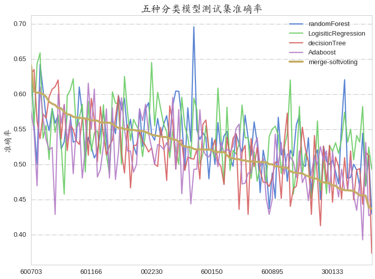
fscore_regex=".*?_test_fscore"
test_score_plot(result, fscore_regex, "f1_score")
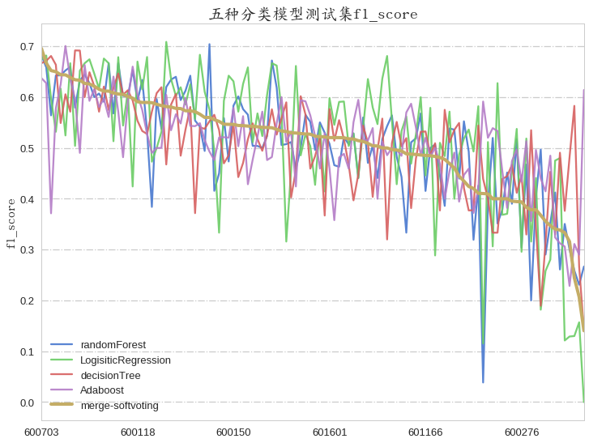
# 分类f1 score不高于50%的比例
merge_test = result[["merge_test_accuracy", "merge_test_fscore"]]
fscore_low_num = merge_test.loc[merge_test["merge_test_fscore"] <= 0.501, :].shape[0] # (46,2)
np.float(fscore_low_num) / merge_test.shape[0] * 100
37.719298245614034
# 分类准确率不高于50%的比例
accuracy_low_num = merge_test.loc[merge_test["merge_test_accuracy"] <= 0.501, :].shape[0] # (46,2)
np.float(accuracy_low_num) / merge_test.shape[0] * 100
30.701754385964914
# 找出分类准确率不高于50%的股票
accuracy_low_index = merge_test.loc[merge_test["merge_test_accuracy"] <= 0.501, :].index.tolist()
len(result.loc[accuracy_low_index, "merge_test_accuracy"]) # 35
accuracy_low_index[:2]
[u'600999', u'002352']
所有股票分类准确率高于50%和不高于50%的数量
def test_score_count(df, index_name, score_name):
group_name = [u"准确率>0.50", u"准确率<=0.50"]
bins = [0.1, 0.5, 0.7]
score_bins = pd.cut(df, bins,labels=index_name, retbins=True)
score_bin_kind = pd.DataFrame(score_bins[0].value_counts())
score_bin_kind["index_name"] = index_name
score_bin_kind.columns = ["score", "index_name"]
plt.figure(figsize=(4,3))
g = sns.barplot(x="index_name", y="score", data=score_bin_kind)
plt.xticks(g.get_xticks(), fontproperties=font, fontsize=16)
plt.ylabel(u"数量", fontsize=16, fontproperties=font)
plt.xlabel("")
plt.title(u"股票数量对比—{}".format(score_name), fontproperties=font, fontsize=18)
plt.gca().yaxis.grid(True, linestyle = "-.",)
text_loc = zip(g.get_xticks(), score_bin_kind["score"].values)
plt.text(text_loc[0][0],text_loc[0][1],s=str(score_bin_kind["score"].values[0]), fontsize=16,va="bottom",ha="center",fontproperties=font)
plt.text(text_loc[1][0],text_loc[1][1],s=str(score_bin_kind["score"].values[1]), fontsize=16,va="bottom",ha="center",fontproperties=font)
if "ress" not in score_name:
plt.ylim(0,90)
else:
plt.ylim(0,25)
test_score_count(merge_test["merge_test_accuracy"], [u"准确率>0.50",u"准确率<=0.50"],u"准确率")
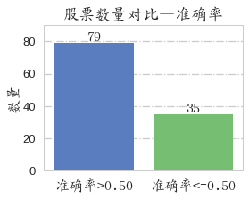
test_score_count(merge_test["merge_test_fscore"], [u"f1_score>0.50",u"f1_score<=0.50"],u"f1_score")
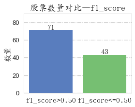
无论是准确率还是f1，大于50%的股票数量超过60%
# accuracy与f1_score对比
merge_test_sorted = merge_test.sort_index()
merge_test_sorted.columns = ["accuracy", "f1_score"]
merge_test_sorted.plot(figsize=(8,6), grid=False)
plt.gca().yaxis.grid(True, linestyle = "-.")
plt.xlabel("")
plt.ylabel(u"accuracy & f1_score", fontsize=16)
plt.title(u"各股票在测试集的accuracy与f1_score对比", fontsize=20, fontproperties=font)
<matplotlib.text.Text at 0x7f8509327990>
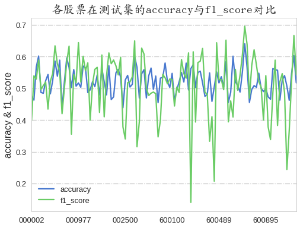
fscore_low_index = merge_test.loc[merge_test["merge_test_fscore"] <= 0.501, :].index.tolist()
fscore_low_index
fscore_low = result.loc[merge_test["merge_test_fscore"] <= 0.501, :]
fscore_low["fea_num"].describe()
count 43.000000
mean 14.558140
std 5.607403
min 2.000000
25% 11.500000
50% 14.000000
75% 19.000000
max 28.000000
Name: fea_num, dtype: float64
fscore_large = result.loc[merge_test["merge_test_fscore"] > 0.501, :]
fscore_large["fea_num"].describe()
count 71.000000
mean 14.845070
std 5.484127
min 2.000000
25% 11.500000
50% 14.000000
75% 18.000000
max 30.000000
Name: fea_num, dtype: float64
accuracy_large = result.loc[merge_test["merge_test_accuracy"] > 0.501, :]
accuracy_large["fea_num"].describe()
count 79.000000
mean 15.518987
std 5.322571
min 2.000000
25% 12.000000
50% 15.000000
75% 19.500000
max 28.000000
Name: fea_num, dtype: float64
accuracy_low = result.loc[merge_test["merge_test_accuracy"] <= 0.501, :]
accuracy_low["fea_num"].describe()
count 35.000000
mean 12.971429
std 5.586147
min 2.000000
25% 9.500000
50% 13.000000
75% 15.000000
max 30.000000
Name: fea_num, dtype: float64
分别对比准确率和f1 score的统计结果，即高于50%和低于50%的两类对比结果，感脚准确率高的特征数也多！
def score_lowandhigh(df, accu_kind):
first_test = df.filter(regex="fea_num|merge_test.*")
first_test.sort_values("fea_num", inplace=True)
first_test.columns = ["fea_num", "accuracy", "f1_score"]
feature_num = first_test["fea_num"]
first_test.drop("fea_num", axis=1, inplace=True)
fig, ax1 = plt.subplots(figsize=(8,6))
first_test.plot(ax=ax1, grid=False)
ax2 = ax1.twinx()
feature_num.plot(ax=ax2, grid=False, label="feature_number(right_axis)", legend=True, color="purple", alpha=0.7)
ax1.set_ylabel("accuracy & f1_score", fontsize=16, fontproperties=font)
ax2.set_ylabel("feature_number", fontsize=16, fontproperties=font)
ax2.legend(loc=1, fontsize=12)
ax1.legend(loc=2, fontsize=12)
# merge_test_sorted.plot(figsize=(8,6), grid=False)
ax1.yaxis.grid(True, linestyle = "-.")
ax1.set_xlabel("")
plt.title(u"准确率{}的股票的accuracy、f1_score与feature_num".format(accu_kind), fontsize=17, fontproperties=font)
# 看看分类准确率高于0.50的那些stocks的准确率和f1 score
score_lowandhigh(accuracy_large, u"高于0.50")
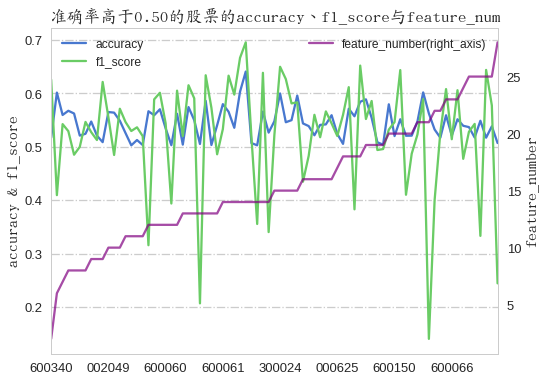
# 看看分类准确率低于0.50的那些stocks的准确率和f1 score
score_lowandhigh(accuracy_low, u"低于0.50")
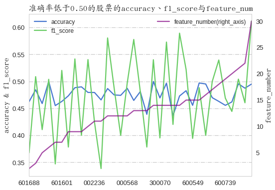
accuracy_top = result.loc[merge_test["merge_test_accuracy"] > 0.55, :]
# 看看分类准确率高于0.55的那些stocks的准确率和f1 score
score_lowandhigh(accuracy_top, u"高于0.55")
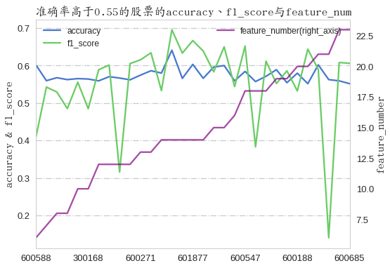
不同的准确率下股票特征与accuracy和f1_score的关系可看出，较高的准确率对应着较高的f1_score，同时，特征也较多。
看看分类准确率高于55%的那些stocks的特征都是啥
accuracy_top_list = result.loc[merge_test["merge_test_accuracy"] > 0.55, :].index.tolist()
fscore_top_list = result.loc[result["merge_test_fscore"] > 0.55, :].index.tolist()
target_index = list(set(accuracy_top_list) & set(fscore_top_list))
# len(target_index) # 20
target_stock = result.loc[target_index, :]
target_stock.head(2)
| fea_num | rf_train_accuracy | rf_test_accuracy | lr_train_accuracy | lr_test_accuracy | tree_train_accuracy | tree_test_accuracy | ada_train_accuracy | ada_test_accuracy | merge_train_accuracy | ... | rf_test_fscore | lr_train_fscore | lr_test_fscore | tree_train_fscore | tree_test_fscore | ada_train_fscore | ada_test_fscore | merge_train_fscore | merge_test_fscore | fea_name | |
|---|---|---|---|---|---|---|---|---|---|---|---|---|---|---|---|---|---|---|---|---|---|
| stockid | |||||||||||||||||||||
| 601877 | 14.0 | 0.8831 | 0.5556 | 0.5831 | 0.5556 | 0.8085 | 0.6349 | 1.0 | 0.5476 | 1.0000 | ... | 0.6585 | 0.5647 | 0.6818 | 0.7994 | 0.6714 | 1.0 | 0.6275 | 1.000 | 0.6667 | sz_volume::rocmean1::fimean5::Lag5mean5::hs300... |
| 600332 | 19.0 | 0.9942 | 0.5435 | 0.5792 | 0.5870 | 0.8533 | 0.5652 | 1.0 | 0.4783 | 0.9981 | ... | 0.5962 | 0.5381 | 0.5000 | 0.8538 | 0.6078 | 1.0 | 0.5000 | 0.998 | 0.5859 | close_roll_20_ppmean90::fimean5::high_pctchang... |
2 rows × 22 columns
target_stock.describe()
| fea_num | rf_train_accuracy | rf_test_accuracy | lr_train_accuracy | lr_test_accuracy | tree_train_accuracy | tree_test_accuracy | ada_train_accuracy | ada_test_accuracy | merge_train_accuracy | ... | rf_train_fscore | rf_test_fscore | lr_train_fscore | lr_test_fscore | tree_train_fscore | tree_test_fscore | ada_train_fscore | ada_test_fscore | merge_train_fscore | merge_test_fscore | |
|---|---|---|---|---|---|---|---|---|---|---|---|---|---|---|---|---|---|---|---|---|---|
| count | 20.000000 | 20.000000 | 20.000000 | 20.000000 | 20.000000 | 20.000000 | 20.000000 | 20.000000 | 20.000000 | 20.000000 | ... | 20.000000 | 20.000000 | 20.000000 | 20.000000 | 20.000000 | 20.000000 | 20.000000 | 20.000000 | 20.000000 | 20.000000 |
| mean | 15.950000 | 0.940980 | 0.559530 | 0.583380 | 0.553630 | 0.856590 | 0.565900 | 0.999245 | 0.527110 | 0.989585 | ... | 0.941895 | 0.584980 | 0.599625 | 0.573735 | 0.868400 | 0.614970 | 0.999255 | 0.553925 | 0.989940 | 0.615905 |
| std | 3.872644 | 0.045878 | 0.038063 | 0.016712 | 0.049804 | 0.080882 | 0.038997 | 0.001889 | 0.045610 | 0.017169 | ... | 0.045279 | 0.085217 | 0.044295 | 0.093469 | 0.067407 | 0.051002 | 0.001867 | 0.077192 | 0.016303 | 0.036228 |
| min | 10.000000 | 0.838000 | 0.493400 | 0.555800 | 0.457400 | 0.709500 | 0.503600 | 0.992200 | 0.428600 | 0.933300 | ... | 0.842600 | 0.384000 | 0.510100 | 0.333300 | 0.768900 | 0.527500 | 0.992300 | 0.371400 | 0.938100 | 0.552200 |
| 25% | 13.000000 | 0.924775 | 0.537600 | 0.567525 | 0.511600 | 0.795325 | 0.527800 | 1.000000 | 0.481425 | 0.987825 | ... | 0.923500 | 0.557475 | 0.579100 | 0.510925 | 0.810450 | 0.571400 | 1.000000 | 0.497575 | 0.988250 | 0.589375 |
| 50% | 14.500000 | 0.948400 | 0.562050 | 0.584250 | 0.555600 | 0.859800 | 0.565450 | 1.000000 | 0.528300 | 0.997700 | ... | 0.948750 | 0.601850 | 0.601500 | 0.570900 | 0.861700 | 0.610650 | 1.000000 | 0.566200 | 0.997700 | 0.610000 |
| 75% | 19.000000 | 0.983525 | 0.578025 | 0.593950 | 0.586400 | 0.933800 | 0.596350 | 1.000000 | 0.563975 | 1.000000 | ... | 0.983925 | 0.654000 | 0.621475 | 0.666700 | 0.933250 | 0.664450 | 1.000000 | 0.604250 | 1.000000 | 0.639975 |
| max | 23.000000 | 0.995500 | 0.641000 | 0.627600 | 0.642900 | 0.992800 | 0.634900 | 1.000000 | 0.594800 | 1.000000 | ... | 0.995500 | 0.681800 | 0.677200 | 0.681800 | 0.992900 | 0.691900 | 1.000000 | 0.700600 | 1.000000 | 0.695700 |
8 rows × 21 columns
target_stock的特征数目最少的10个，最多的23个，平均15个左右，即分类效果较好的stocks的特征数目既不太少也不太多，那这些股票都使用了哪些特征呢，可否用这些特征作为所有股票的最终的分类特征呢？
target_stock["fea_name"].head(2)
stockid
002241 volume_roll_5_ppmean90::rocmean1::close_roll_3...
600703 Lag20mean90::rocmean1::ccimean1::rsv9mean1::vo...
Name: fea_name, dtype: object
top_fea_name = target_stock["fea_name"].str.split("::")
top_fea_name.head(2)
stockid
601877 [sz_volume, rocmean1, fimean5, Lag5mean5, hs30...
600332 [close_roll_20_ppmean90, fimean5, high_pctchan...
Name: fea_name, dtype: object
取在20支股票中公共特征次数超过3次的那些特征
tip_fea_list = []
for i in range(len(top_fea_name)):
tip_fea_list.extend(top_fea_name[i])
fname, fcount = np.unique(tip_fea_list, return_counts=True)
fea_sorted = sorted(zip(fname, fcount), key=lambda x: x[1], reverse=True)
fea_sorted = filter(lambda x: x[1]>3, fea_sorted)
# len(fea_sorted) # 25
feature_final = [i[0] for i in fea_sorted]
feature_final[:3]
[u'rsimean1', u'rocmean1', u'obvmean5']
使用选定特征重新建模
使用选择的25个特征对分类准确率不高于50%的stocks重新进行分类训练
stock_tackle(accuracy_low_index, stocks, feature_final, 0)
# 分类结果在此略过...
使用选定的25个特征对第一次分类准确率不高于50%的股票重新进行分类评估，结果如下：
# 读入文件
accuracy_ress = pd.read_csv("./classification_result_ress_accuracy.csv",encoding="utf-8", dtype=str)
accuracy_ress.set_index("stockid", inplace=True)
fscore_ress = pd.read_csv("./classification_result_ress_fscore.csv",encoding="utf-8", dtype=str)
fscore_ress.set_index("stockid", inplace=True)
result_ress = pd.concat([accuracy_ress, fscore_ress], axis=1)
result_ress.drop("data_shape", axis=1, inplace=True)
result_ress = result_ress.astype(np.float)
result_ress.head(2)
| rf_train_accuracy | rf_test_accuracy | lr_train_accuracy | lr_test_accuracy | tree_train_accuracy | tree_test_accuracy | ada_train_accuracy | ada_test_accuracy | merge_train_accuracy | merge_test_accuracy | rf_train_fscore | rf_test_fscore | lr_train_fscore | lr_test_fscore | tree_train_fscore | tree_test_fscore | ada_train_fscore | ada_test_fscore | merge_train_fscore | merge_test_fscore | |
|---|---|---|---|---|---|---|---|---|---|---|---|---|---|---|---|---|---|---|---|---|
| stockid | ||||||||||||||||||||
| 600999 | 0.9892 | 0.5573 | 0.5732 | 0.4351 | 0.8889 | 0.5496 | 1.0 | 0.5038 | 1.0000 | 0.5191 | 0.9888 | 0.4314 | 0.5428 | 0.1778 | 0.8898 | 0.5124 | 1.0 | 0.3299 | 1.0000 | 0.3762 |
| 002352 | 0.9925 | 0.5141 | 0.5593 | 0.5634 | 0.7878 | 0.4366 | 1.0 | 0.4789 | 0.9925 | 0.4859 | 0.9931 | 0.6057 | 0.6728 | 0.6265 | 0.8265 | 0.4872 | 1.0 | 0.5432 | 0.9932 | 0.5576 |
result_ress.describe()
| rf_train_accuracy | rf_test_accuracy | lr_train_accuracy | lr_test_accuracy | tree_train_accuracy | tree_test_accuracy | ada_train_accuracy | ada_test_accuracy | merge_train_accuracy | merge_test_accuracy | rf_train_fscore | rf_test_fscore | lr_train_fscore | lr_test_fscore | tree_train_fscore | tree_test_fscore | ada_train_fscore | ada_test_fscore | merge_train_fscore | merge_test_fscore | |
|---|---|---|---|---|---|---|---|---|---|---|---|---|---|---|---|---|---|---|---|---|
| count | 35.000000 | 35.000000 | 35.000000 | 35.000000 | 35.000000 | 35.000000 | 35.000000 | 35.000000 | 35.000000 | 35.000000 | 35.000000 | 35.000000 | 35.000000 | 35.000000 | 35.000000 | 35.000000 | 35.000000 | 35.000000 | 35.000000 | 35.000000 |
| mean | 0.966860 | 0.505991 | 0.574640 | 0.502557 | 0.845254 | 0.507454 | 0.997851 | 0.498680 | 0.991723 | 0.506531 | 0.967537 | 0.484546 | 0.588957 | 0.504066 | 0.841951 | 0.490154 | 0.997880 | 0.495414 | 0.991934 | 0.502054 |
| std | 0.030945 | 0.049303 | 0.024525 | 0.039650 | 0.081260 | 0.054788 | 0.006110 | 0.043482 | 0.013401 | 0.038681 | 0.029980 | 0.107487 | 0.061700 | 0.125887 | 0.087532 | 0.092912 | 0.006022 | 0.078563 | 0.012882 | 0.084782 |
| min | 0.890700 | 0.417500 | 0.541000 | 0.435100 | 0.661800 | 0.418900 | 0.967500 | 0.421100 | 0.939400 | 0.426400 | 0.896300 | 0.256400 | 0.349100 | 0.177800 | 0.586700 | 0.335900 | 0.968000 | 0.329900 | 0.942100 | 0.273500 |
| 25% | 0.948100 | 0.467400 | 0.558850 | 0.472950 | 0.793450 | 0.459600 | 1.000000 | 0.466000 | 0.991750 | 0.474700 | 0.950150 | 0.406200 | 0.553900 | 0.425550 | 0.795500 | 0.408250 | 1.000000 | 0.451400 | 0.992150 | 0.449500 |
| 50% | 0.976000 | 0.506200 | 0.572800 | 0.503100 | 0.860200 | 0.500000 | 1.000000 | 0.500000 | 0.997000 | 0.506300 | 0.976100 | 0.493500 | 0.602300 | 0.528700 | 0.858100 | 0.493000 | 1.000000 | 0.500000 | 0.997100 | 0.490300 |
| 75% | 0.991400 | 0.548750 | 0.583850 | 0.531150 | 0.892400 | 0.538950 | 1.000000 | 0.524000 | 1.000000 | 0.523550 | 0.991400 | 0.565150 | 0.633400 | 0.604150 | 0.891800 | 0.565350 | 1.000000 | 0.551500 | 1.000000 | 0.578650 |
| max | 1.000000 | 0.611100 | 0.665100 | 0.610000 | 0.954200 | 0.638900 | 1.000000 | 0.638900 | 1.000000 | 0.629600 | 1.000000 | 0.679200 | 0.684800 | 0.678000 | 0.955100 | 0.681600 | 1.000000 | 0.682900 | 1.000000 | 0.661000 |
# 分类准确率低于50%的比例
accuracy_low_num_ress = merge_test_ress.loc[merge_test_ress["merge_test_accuracy"] <= 0.501, :].shape[0]
np.float(accuracy_low_num_ress) / merge_test_ress.shape[0] * 100
40.0
# 分类f1_score低于50%的比例
merge_test_ress = result_ress[["merge_test_accuracy", "merge_test_fscore"]]
fscore_low_num_ress = merge_test_ress.loc[merge_test_ress["merge_test_fscore"] <= 0.501, :].shape[0]
np.float(fscore_low_num_ress) / merge_test_ress.shape[0] * 100
57.14285714285714
test_score_count(merge_test_ress["merge_test_accuracy"], [u"准确率>0.50",u"准确率<=0.50"],u"准确率_ress")
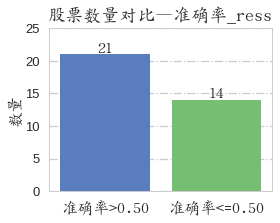
test_score_count(merge_test_ress["merge_test_fscore"], [u"f1_score<=0.50",u"f1_score>0.50"],u"f1_score_ress")
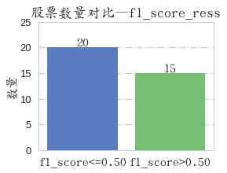
# 使用特定特征进行分类评估与之前的分类准确率对比
fig, ax = plt.subplots(figsize=(8,6))
merge_test_ress_sorted = merge_test_ress.sort_index()
merge_test_ress_sorted.columns = ["accuracy", "f1_score"]
merge_test_ress_sorted["accuracy"].plot(ax=ax, grid=False, linewidth=2, label="accuracy_ress", legend=True, color="red", style="-.",alpha=0.7)
# merge_test_ress_sorted["f1_score"].plot(ax=ax, grid=False, label="f1_score_ress", legend=True,linewidth=4, color="purple",style="-.",alpha=0.8)
merge_low_sorted = merge_test_sorted.loc[merge_test_sorted["accuracy"] < 0.501, :]
merge_low_sorted = merge_low_sorted .sort_index()
merge_low_sorted["accuracy"].plot(ax=ax,grid=False,linewidth=2,alpha=0.9,legend=True, label="accuracy")
# merge_low_sorted["f1_score"].plot(ax=ax,grid=False,linewidth=2,alpha=0.9,legend=True, label="fscore")
plt.gca().yaxis.grid(True, linestyle = "-.")
plt.xlabel("")
plt.ylabel(u"accuracy", fontsize=16)
plt.title(u"使用特定特征进行分类评估与之前的分类对比", fontsize=20, fontproperties=font)
<matplotlib.text.Text at 0x7f8502d89ed0>
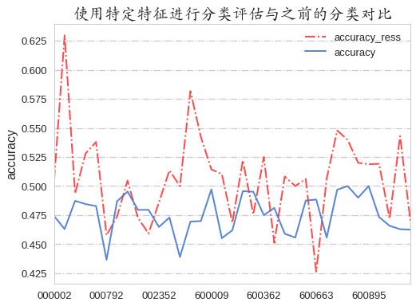
各种分类器在使用特定特征重新分类的的表现
test_score_plot(result_ress, accuracy_regex, u"准确率_ress")
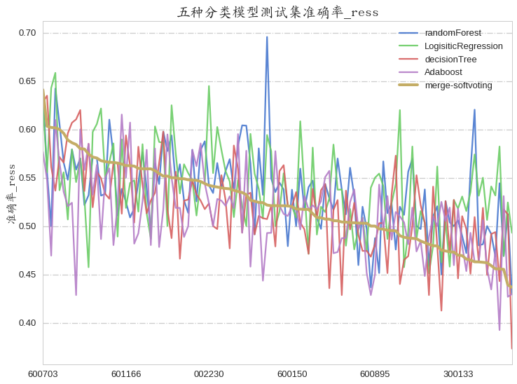
test_score_plot(result_ress, fscore_regex, u"f1_score_ress")
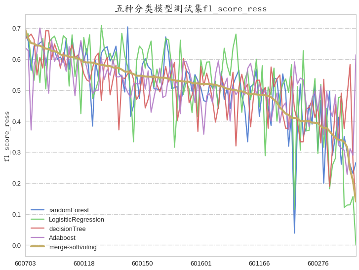
在使用选定的25个特征对第一次分类准确率不高于50%的那些股票进行重分类模型构建，整体准确率有提高，说明特征选择很重要！！！
对114支股票分别建立分类模型预测股价涨跌，分类结果详情就不列出了，在这举一个实例，就拿在第二次重新分类准确率最高的000063这支股票为例：
result_ress_sorted_ = result_ress.sort_values("merge_test_accuracy", ascending=False)
result_ress_sorted_.head()
| rf_train_accuracy | rf_test_accuracy | lr_train_accuracy | lr_test_accuracy | tree_train_accuracy | tree_test_accuracy | ada_train_accuracy | ada_test_accuracy | merge_train_accuracy | merge_test_accuracy | rf_train_fscore | rf_test_fscore | lr_train_fscore | lr_test_fscore | tree_train_fscore | tree_test_fscore | ada_train_fscore | ada_test_fscore | merge_train_fscore | merge_test_fscore | |
|---|---|---|---|---|---|---|---|---|---|---|---|---|---|---|---|---|---|---|---|---|
| stockid | ||||||||||||||||||||
| 000063 | 0.9984 | 0.6111 | 0.5698 | 0.5370 | 0.9524 | 0.6389 | 1.0000 | 0.6389 | 1.0000 | 0.6296 | 0.9984 | 0.6719 | 0.6147 | 0.6377 | 0.9532 | 0.6422 | 1.0000 | 0.6829 | 1.0000 | 0.6610 |
| 300070 | 0.9728 | 0.4898 | 0.5725 | 0.5204 | 0.8297 | 0.5000 | 0.9982 | 0.5714 | 0.9783 | 0.5816 | 0.9731 | 0.3902 | 0.5986 | 0.3896 | 0.8058 | 0.3951 | 0.9982 | 0.6182 | 0.9783 | 0.6019 |
| 600741 | 0.8914 | 0.5414 | 0.5837 | 0.5541 | 0.7862 | 0.4904 | 0.9966 | 0.5350 | 0.9593 | 0.5478 | 0.8963 | 0.5862 | 0.6175 | 0.6196 | 0.8000 | 0.5699 | 0.9967 | 0.5922 | 0.9605 | 0.6162 |
| 601601 | 0.9414 | 0.4914 | 0.5566 | 0.5143 | 0.8879 | 0.5257 | 1.0000 | 0.5429 | 0.9970 | 0.5429 | 0.9428 | 0.5389 | 0.6049 | 0.6222 | 0.8917 | 0.5608 | 1.0000 | 0.5876 | 0.9971 | 0.5876 |
| 300133 | 0.9936 | 0.5904 | 0.5906 | 0.5422 | 0.9424 | 0.6024 | 1.0000 | 0.4578 | 1.0000 | 0.5422 | 0.9937 | 0.6792 | 0.6082 | 0.6780 | 0.9434 | 0.6118 | 1.0000 | 0.5455 | 1.0000 | 0.6275 |
result_ress_sorted_.loc["000063", "merge_test_accuracy"]
0.62960000000000005
result.loc["000063", "merge_test_accuracy"]
0.46300000000000002
000063股票在第一次构建分类模型的测试集的准确率为0.463，而在第二次使用选定的特征进行的分类模型构建的准确率为0.629，精确率，召回率及f1_score就不一一列出来了，不同分类器的分类效果可参考见下面的混淆矩阵图，其中，前5副图为混淆矩阵，后一张为该股票的close_price和pct_change。
000063混淆矩阵图 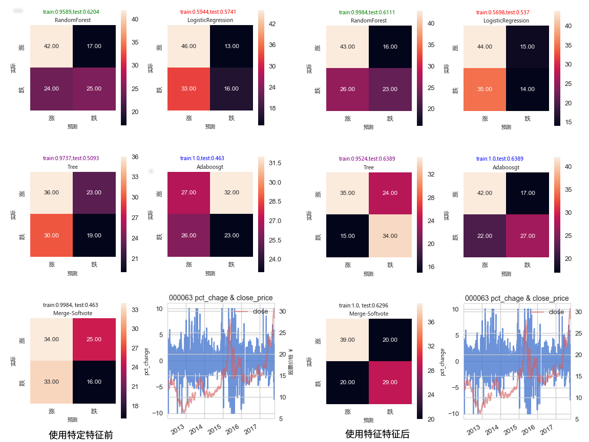
总结
本项目使用机器学习中的分类算法预测部分沪深300股票的涨跌情况。数据是使用tushare提供的API采集2012-2017年沪深300股票的信息，同时，也收集了同时期的各股指、股票基本面、经济数据等相关信息，采用sklearn的分类模型，如随机森林、LogisticRegression等分类器对部分沪深300股票的涨跌情况进行预测。
分类建模使用的股票数据是源自是沪深300中均价在10-30元之间并且缺失数据少于20%的114支股票信息，特征工程选择的特征包括了股票价格、成交量信息，基于股票价格和成交量计算的其他股票指标，国内同时期股指、经济以及股票的基本面信息等。使用递归特征消除(RFE)等三种特征选择方法选出重要的特征，然后简单粗暴地用三种特征选择方法选择的特征的交集为分类模型的训练特征。使用sklearn进行分类模型的构建，具体而言是采用了随机森林、LogisticRegression、决策树、Adaboost四种分类器分别构建相应的分类模型，最后使用softVoting对上述四类分类器进行模型融合，从而完成分类模型的构建。
分类模型在测试集的表现为，有40%左右的股票的分类预测准确率不高于50%，分析分类结果能发现，分类准确率较高的stocks的特征数量较多，为此，使用分类结果中准确率高于55%的股票的特征为特定的特征对那40%的分类准确率低的股票重新进行分类训练，结果为有40%的股票的分类准确率仍旧不高于50%，有60%的在第一次分类中的准确率不高于50%，在第二次使用选定的特征训练后其准确率超过50%，说明选定的特征对分类模型构建是有效的。
目前，在量化投资领域有很多人在用一些机器学习的算法进行research，如用自然语言处理来选股，线性回归的β系数、分类预测等等，本项目就是利用sklearn封装的分类算法对股票涨跌进行预测，本质是机器学习中的分类问题。为了简化流程，在构建的分类模型的时候采用的是二分类，同时由于最终分类效果较差，因此不具备实际意义。后续，可进行多分类模型构建，同时应采用更多有效的特征，结合其他方法比如加入自然语言处理的手段对股票的新闻类信息进行采集和分析并加入到模型中，以提高模型的预测精准性。